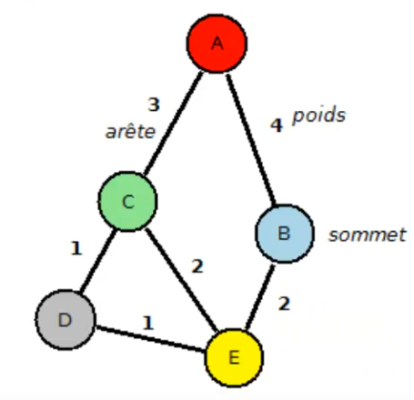

Routage IP : OSPF
Plan
• Problème du plus court chemin
• Limitations de RIP
• Open Shortest Path First
• Fonctionnement
• Area
• Activation
• Définition du Router-ID
• Activation de l'OSPF sur une interface
• Interface passive
• Commande d'information
Problème du plus court chemin
• problème classique de théorie des graphes
◇ touver le chemin optimal entre les sommets d'un graphe
◇ particulièrement utile dans le cadrte des résaux
• de nombreux algorithmes existent pour résoudre ce problème
◇ plus ou moins efficaces suivant les contextes
◇ algorithme de Dijkstra
◇ Algorithme de Bellman-Ford

Limitations de RIP
• protocole à vecteur de distance
◇ aucune vision globale du réseau
▪ diffusion des routes de proche en proche
◇ grand consommation de la bande passante
▪ particulièrement pour les grands réseaux
▪ du fait de l'envoi prériodique de toutes les tables de routage en broadcast
◇ sensible aux boucles de routage
▪ limite de 15 sauts
- tout réseau au delà de 15 routeurs est considéré comme inaccessible
• ne se base que sur le nombre de “sauts” permettant d'atteindre le routeur voisin
◇ auncune prise en compte de la bande passante de liaisons pour choisir le meilleur chemin possible, ou d'autre information (fiabilité, charge, délai, etc ...)
Open Shortest Path First
• protocole à état de lien
◇ connaissance de l'intégralité de la topologie du réseau
▪ élimine les boucles de routage
◇ collecte de l'ensemble des coûts de liens
▪ en terme de temps
▪ en continue
◇ plus grande consommation de ressources processeur
▪ nécessite des routeurs performants
Fonctionnement
1) analyse en continue des connexions vers les éléments proche
- message hello envoyé à intervalles réguliers
2) calcul du plus court chemin bers le routeurs voisins
3) diffusion de la liste des routes connectées et des états de lien
- propagé de proche en proche
- toutes les 30 minutes (intégralité des LSAs)
* et à chaque changement (LSA modifiés uniquement)
- LSK (Link-State Advertisement)
* l'ensemble des LSAs d'une aire formant la LSDB (Link-State Data Base)
4) détermine enfin la route la plus courte pour chaque réseau de la LSDB
Area
• sous-ensemble de routeurs
◇ en bordure duquel un résumé de la LSDB peut-être fait
◇ chaque sous-réseau appartenant à une seule aire
• permet d'éviter de propager l'intégralité de la LSDB
• identifées par des nombres entiers de 32 bits
◇ souvent notés en notation décimale pointée
▪ à la manière des adresses IPv4
• la configuration d'OSPF devient complexe quand plusieurs aires sont mises en place
◇ heureusement, il ne vous est demandé que de savoir le configurer dans une aire unique dans le cadre de la CCENT
Activation
# router ospf process-id
(config-router)#
• lancement d'un processus de routage OSPF
◇ permet d'activer l'OSPF sur le routeur (aucun par défaut)
◇ ou de passer en mode de configuration de ce processus de routage si déjà actif
◇ proccess-id : identifiant interne du processus de routage
▪ n'importe quel entier supérieur ou égal à 1
Définition du Router-ID
• Optionnel
◇ généralement généré automatiquement à partir des adresses IP du routeur an lancement d'OSPF
• Valeur explicite
(config-router)# router router-id
• ou par configuration de la plus haute adresse IP de l'interface de loopback
(config)#interface loopback 0
(config-if)#ip address 172.16.0.1 255.255.255.0
Activation de l'OSPF sur une interface
• De manière implicite
◇ relativement à une adresse réseau
(config-router)# network ip-address wildcard-mask area area-id
• Exemple
(config)#router ospf 100
(config-router)#network 10.0.3.0 0.0.0.255 area 0
(config-router)#network 10.0.0.0 0.0.0.255 area 0
Interface passive
• Par défaut, un routeur sur lequel OSPF est activé continuera de chercher régulièrement ses “voisins" sur ses interfaces
◇ par envoi de messages hello à intervalles réguliers
• Hors cela peut-être un gâchis de ressources quand il n'y a aucun voisin sur celle-ci
◇ il est donc possible de mettre une interface en mode passif
◇ afin qu'elle n'envoie plus de message hello
• en mode de configuration du processus de routage
(config-router)# passive-interface type number
• ou en mode de configuration de l'interface
(config-if)# ip ospf passive-interface
Commandes d'information
# show ip ospf
• afficher les informations sur les voisins
# show ip ospf neighbor
Ce qu'on a couvert
• Gestion de l'OSPF en single-area
◇ bénéfices par rapport au protocole RIP
◇ fonctionnement
◇ activation
◇ router-id
◇ configuration
◇ interfaces passive